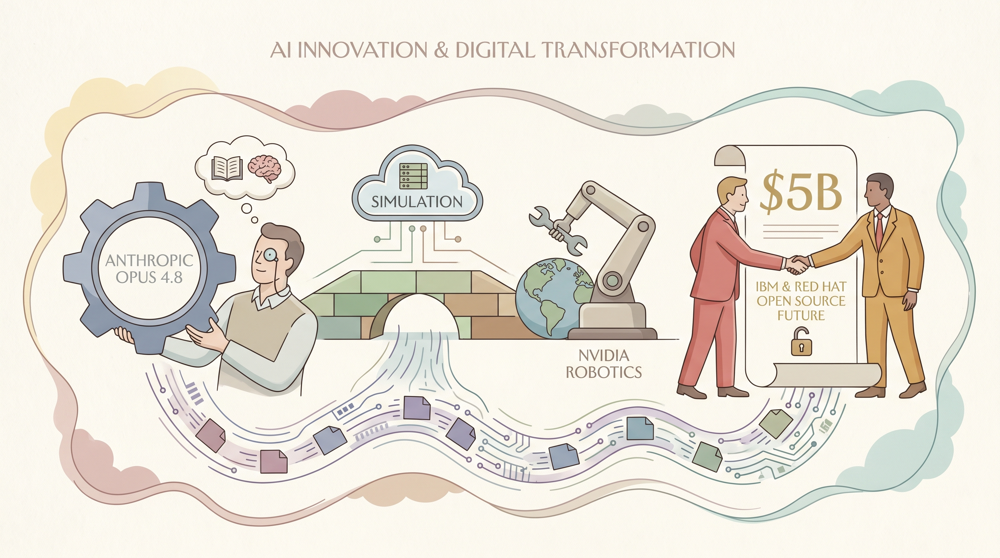

Anthropic发布Claude Opus 4.8升级版旗舰模型，提升编程和知识工作能力，价格保持不变。
两克伴AIGC日报
2026-05-29 星期五

本期关注：Anthropic发布新模型Opus 4.8 - Axios、NVIDIA研究推动机器人技术从模拟走向现实世界、IBM与Red Hat承诺投入50亿美元，在AI时代重新定义开源的未来 - IBM新闻室、Opus 4.8 Artificial Analysis 结果
📰 行业动态
NVIDIA在ICRA大会上展示8篇机器人模拟到现实迁移研究论文，推动具身智能实用化进程。
IBM与Red Hat宣布50亿美元AI时代开源安全计划，通过Project Lightwell建立企业级软件供应链防护体系。
🔥 今日焦点
Anthropic 最新发布的 Claude Opus 4.8 在 Artificial Analysis 第三方评测中展现出令人瞩目的表现。根据社区用户整理的对比数据，Opus 4.8 在整体智能水平上略胜 GPT-5.5，虽然编码能力稍有差距，但在「Agent 能力」这一关键维度上拉开了显著优势，稳坐当前最强 Agent 模型的宝座。在效率层面，Opus 4.8 也实现了小幅提升，进一步优化了计算资源的使用。这意味着对于需要模型自主规划、执行多步骤任务的用户——比如自动化工作流、复杂代码处理、或者长程推理场景——Opus 4.8 几乎是目前的最优选择。当然，具体选择还要看实际用例，毕竟编码任务上还是 GPT-5.5 更有优势，但综合来看，Anthropic 这波更新确实让竞争格局又紧了几分。
***
🐦 Ta们说
> "Eid Mubarak! <https://t.co/vpU3NJ3RvC>"
***
> "It is unacceptable to use your personal influence to help someone get a job because doing so undermines the meritocracy. It's not good for the job seeker, because it conveys they did not really earn it; it is not good for the person doing the hiring, because it undermines their authority; and it is not good for you because it demonstrates you will compromise merit for friends. It is an insidious form of corruption and it must not be tolerated. #principleoftheday"
***
📄 重点论文
**核心贡献**: 提出FluxMem框架，将Agent记忆建模为异构图，通过渐进式拓扑演化解决动态Agent环境中记忆表示僵化的问题。该方法能够根据反馈、任务变化和异构信号动态调整记忆连接，克服传统静态记忆库检索管道脆弱的缺陷。核心创新在于将记忆结构从预定义的静态表示转变为可演化的动态图结构。
**与AI Agent的关联**: 直接针对AI Agent的长期记忆能力这一核心挑战，提出可演化的记忆框架对构建能够适应动态环境、完成长时序任务的自主智能体至关重要。该工作为Agent记忆系统的设计提供了新的范式，对提升Agent在复杂环境中的持续学习和适应能力具有重要价值。
**核心贡献**: 提出Calibrated Collective Oversight (CCO)方法，解决Agentic AI系统中人类如何对超越自身能力的自主系统保持有效监督的核心问题。该方法通过聚合多样化的辅助评分函数，在具有统计保证的序列设置中实现可扩展的监督机制，无需依赖复杂假设或启发式方法。
**与AI Agent的关联**: 直接触及AI Agent领域最关键的安全与可控性挑战——如何确保高度自主的Agent系统在人类控制之下。该工作为构建安全可靠的Agentic AI系统提供了实用的监督框架，对推动自主智能体在实际应用中的安全部署具有重要的理论与实践意义。
🛠️ 产品推荐
Personal Use for Simulations（个人模拟实验平台）是一款基于超级计算的个性化虚拟现实沙盒系统，旨在为个人用户提供近似真实地球的模拟环境。该平台通过自研的ASI（人工超级智能）引擎驱动，实时生成具备人类、动物、鸟类等真实行为模式与心理反应的AI代理，并在缺乏信息的区域自动插值补全，实现全息式的世界模型。用户通过脑机接口直接登录系统，可在任意尺度上调节物理常数、因果规则或全局参数，指令即时生效。核心价值在于突破传统实验成本与伦理限制，支持快速原型验证、复杂系统行为预测、AI模型强化学习训练、沉浸式教育培训等多元化应用场景。平台的高保真感知引擎与可编程物理层，使其在科研、游戏、决策仿真等领域具备独特优势，为个人探索未知、创新突破提供前所未有的自由与控制力。
***
The Singularity Gate（奇点之门）是一款专门用于评估前沿AI模型预测能力的创新基准测试工具。与传统基准测试不同，它不考察模型对已有知识的复现或推理能力，而是让模型在不看答案的情况下，预测其训练数据截止日期之后发表的、足以改变范式的科学发现。
该基准测试涵盖物理学、生物学、化学等多个学科的真实突破性论文，要求模型仅根据摘要或核心线索预测其关键发现。目前表现最佳的模型为Claude Opus 4.7，最高得分达17.75%（部分正确）。